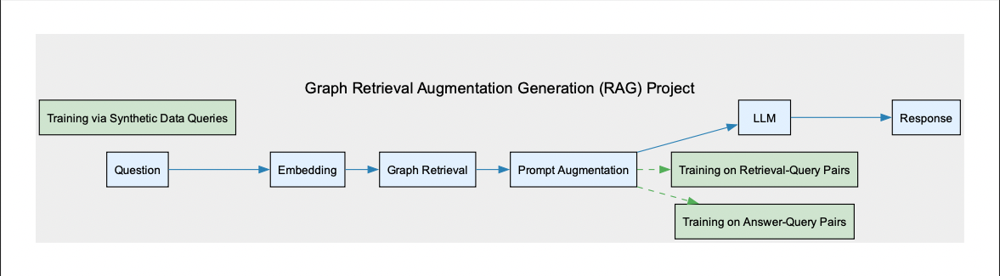
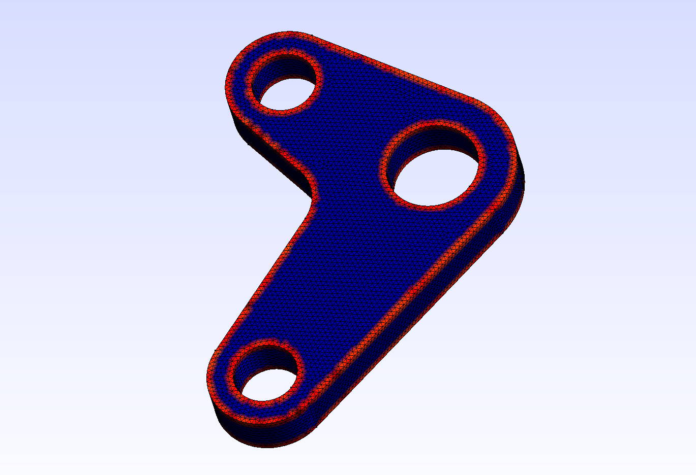
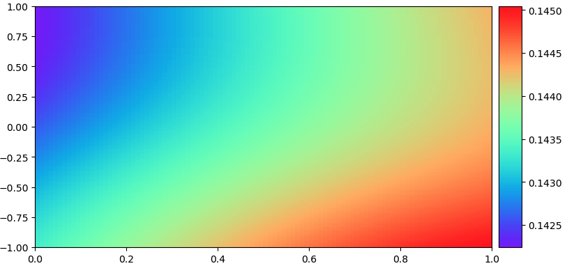
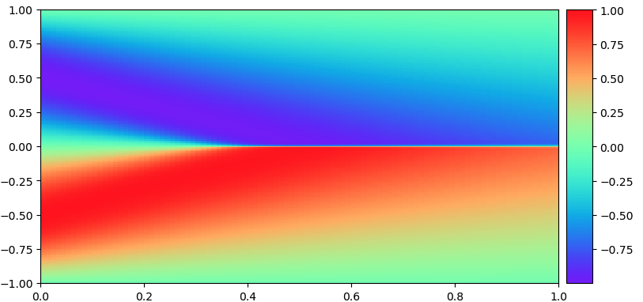

Application of Augmented Fourier Neural Operator Methods to Conjugate Heat Transfer Problems
High fidelity numerical simulations of the Navier-Stokes Equations coupled with the Heat-Advection equation for various Conjugate Heat Transfer (CHT) problems has proven to be of high cost computationally. These numerical simulations prove crucial to many engineering applications from the electronics industry to gas turbine simulation to aid with design optimization. Recent efforts have been made to apply machine learning as a surrogate model for such applications using various methods such as Variational Auto-Encoders (VAEs) or Physics Informed Neural Networks (PINNs), which require fixed-size inputs and only learn a single instance of a partial differential equation (PDE). The Fourier Neural Operator is a relatively new architecture which utilizes fast-fourier-transform compression to map between continuous function spaces, which allows for a mesh-independent architecture. We apply this to conjugate heat transfer problems by providing additional features as input, including a domain mask, and a masked loss function, which allows the model to render multi-physics, multi-domain problems with a single input. In less that 10 ms, and with an accuracy of 0.992 on the test set, this modified Fourier Neural Operator should be a crutch for future repeatable conjugate heat transfer simulations in engineering.
Thesis
Graph Retrieval Augmented Generation for Complex Python Codebases
We won HackAtBrown2024 for best devtool with a near-complete implementation of Graph RAG on codebases. Here, we generate a knowledge graph of a python codebase using a custom parser on python abstract syntax trees. Then we embed the nodes (or chunks) using codebert, a model that is trained on both code and natural language. We store this data and compute a cosine similarity between our prompt (embedded in the same codebert) and our database embedding, which will return the most similar chunk. We can then concatenate this with our original prompt and feed it to a small llm like llama-7b or Mistral-7b. Additional performance can be gained by utilizing fine-tuning on the embeddings and the llm itself using synthetic question-answer, query-retrieval pairs from gpt4.
Project Active For more information about this project, visit our project page, github at bottom of devpost.
Graph Neural Network Research
I cannot say too much here, but the bulk of my recent work at Atomic Industries was on deep graph neural networks and implementing methods on the graphs of part meshes for hierarchical learning. I employed various methods from discrete differential geometry and also my own personal algorithms for curvature and edge detection as additional features fed into the network as well. I think personally what is interesting is that graph neural networks do not require a fixed length input, and that they already have a relative positional embedding given by the adjacency matrix.
Thrust Vectoring Solid Rocket Motor with Optimal Control
This project was a research capstone from my final year of mechanical engineering undergrad, where we set out to control a solid rocket motor with a gimbal. Generally speaking, this is quite easy for larger rockets with liquid engines, since the rockets are heavier and have less thrust instability. This is why videos of thrust vector gimbals are often much slower and less entertaining. Here, we used optimal control with a linear quadratic regulator, and the model was "trained" on the linear time invariant approximation to the aerodynamic differential equation in 2 dimensions (pitch and yaw). The experiment consisted of the same differential equation, but expressed as an inverted pendulum, which can actually be proven to have the same dynamics (since damping is often small on rockets). A kalman filter was used prior to the the linear quadratic regulator to try to weight the open loop model with gyro sensor feedback to aid accuracy and cancel sensor noise covariance cross terms. Mathematically this was a highly interesting problem, and certainly the engineering design was fulfilling.


Physics Informed Neural Network to Solve the 1-D Burgers Equation
This is 1 dimensional burgers equation solution shown before and after training that was solved in PyTorch as a physics informed neural network. The way it works is that given the inputs to a PDE (x,t), the backpropagation allows the network to learn the solution u(x,t) to the PDE based on the conservation constraint given by the physics informed loss (usually just the PDE expressed as a homogenous equation), alongside the data driven loss. This problem only accepts fixed grids, which is an artifact of using a neural network. Currently I am working on methods such as physics informed neural operators which allow grids of any size within a margin by using the fourier transform. Other methods to deal with mesh-like inputs that have any tensor length are common in graph neural networks, which I have researched considerably at Atomic Industries. Top image represents domain initialization, bottom is after learning the PDE.
 